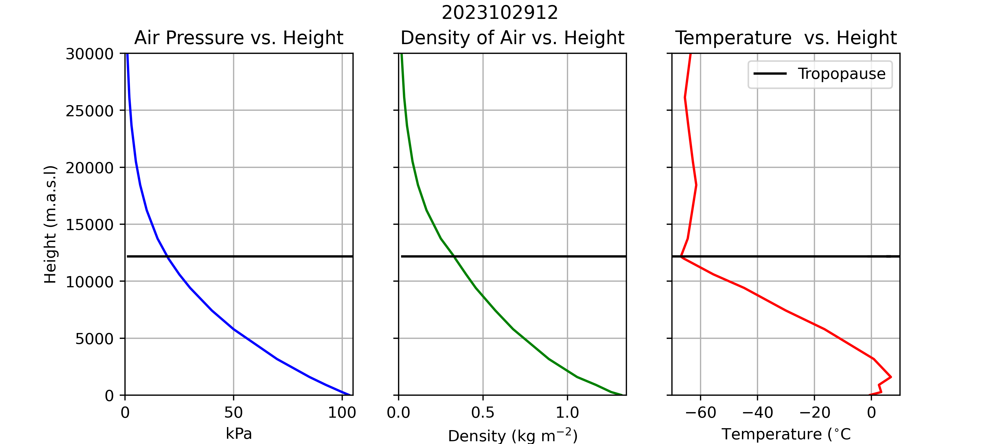

Lab 4: Vertical Structure of the Atmosphere
This assignment is worth 16.5 points.
Objectives
- Understand the concept related to the vertical structure of the atmosphere, in particular, how temperature changes with height
- Understand the different types of lapse rates
- Environmental lapse rate (ELR)
- Dry adiabatic lapse rate (DALR)
- Saturated adiabatic lapse rate (SALR)
- Understand and concept of static stability and distinguish between different types of stability within a particular air layer
1 Theory
Atmospheric Pressure
The atmosphere is a compressible gas; i.e., air is compressed by the weight (pressure) of the air above it. Therefore, density (\(\rho\)) and air pressure (\(P_a\)) decrease with increasing height above the sea level (Figure 1). Note how \(P_a\) decreases steadily with height, from just over 100 kPa at sea level to less than 10 kPa at 25,000 meters above sea level (m.a.s.l). Air pressure always decreases with height, because air pressure is a function of the weight of air above a measurement location. As you move upwards through the atmosphere, the weight of the air above you decreases, so there is less pressure (compressional force) exerted by the remaining air above you and the density of the air decrease.
The relationship between pressure and density is given by the Ideal Gas Law Equation 1. Recall the notation from Lab 3: pressure (\(P\)), volume (\(V\)), temperature (\(T\)), and the amount of the gas (\(n\)) in moles; with \(R\) being the ideal gas constant (see Table 2). The amount in moles of a given gas (or mixture of gasses) can be defined as \(n = \frac{m}{M}\), where \(m\) is the mass of the substance (in kg or g) and \(M\) is the Molar mass (in kg mol-1 or g mol-1) respectively.
\[ PV=nRT \tag{1}\]
You may have noticed this phenomena if you’ve ever been to the top of a tall mountain. Since the atmosphere is less dense on top of a tall mountain, there is less oxygen available with each, and your body has to breathe more heavily to compensate. You probably also noticed that it was cooler atop the mountain. Looking at Equation 1, we can see that a decrease in \(P\) can also lead to a decrease in \(T\).

Lapse Rates
As a consequence of the ideal gas law, when an air parcel is lifted upwards though the atmosphere, its temperate will decrease in correspondence with the decrease in air pressure. Conversely, when a parcel of air sinks its temperature will increase in correspondence with the increase in pressure. This phenomena is known as an adiabatic process: where temperature of a substance changes without the addition/subtraction of energy. When thinking about adiabatic processes, we assume a parcel does not mix with the environment. In reality, this assumption is never perfectly met, but it applies well enough when dealing with large parcels of air.
The rate at which the parcel will cool depends on whether or not it is saturated. Why? Because the amount of water the atmosphere can hold is a function of temperature. In order for a parcel to cool below its dewpoint water vapor must condense, and the process of condensation releases heat to the surrounding environment. The dry adiabatic lapse rate (DALR) applies when a parcel of air is not, and has a constant with a value of 0.01 K m-1. The saturated adiabatic lapse rate (SALR) applies once a parcel of air reaches saturation. It is important to note that SALR < DALR; the parcel cools as it rises but condensation also occurs which releases latent heat and counteracts some of the cooling. The SALR is not a constant, however, a reasonable approximation of the SALR for typical conditions 0.005 K m-1. We will assume this value when performing some calculations later.
The actual value of the SALR is a complex non-linear function of temperature and pressure. It is shown for selected values of \(T\) and \(P_a\) in Figure 2.
- Calculating the exact value of the SALR is complex because:
- The latent heat released by condensation varies as a function of \(T\)
- The amount of water that must condense for a parcel to cool also varies as a function of \(T\)
- \(T\) varies as a function of \(P_a\)

The observed rate of change of \(T\) with height at a given location know the environmental lapse rate (ELR). We can determine the ELR directly from weather balloon data or estimate it from weather forecast models. The ELR rate varies drastically between locations, heights, and times. It can be calculated between any two heights in a balloon profile using Equation 4. A positive ELR indicates that \(T\) increases with height whereas a negative ELR indicates \(T\) it decreases with height.
\[ ELR = \frac{T_{z2}-T_{z1}}{z2-z1} \tag{2}\]
If you look at the difference between those two lapse rates - ELR vs. DALR - you can assess the static stability of a particular air layer:
ELR > DALR: unstable. For an air parcel, a slight upward displacement will result in a continuous rise of the parcel because the parcel will become warmer and less dense than the surrounding air at the same height and therefore possesses buoyancy. Conversely, if the air parcel is displaced below, it will become cooler and more dense than the surrounding air at the same height, and it will tend to continue sinking. In an unstable layer, vertical movements are enhanced.
ELR = DALR: neutral. There will be no tendency for a parcel to rise or sink after it is displaced either above or below because it cools or warms at exactly the same rate as the surrounding air. Therefore, the parcel will come to rest after the displacing force is removed.
ELR < DALR: stable. If an air parcel is displaced upwards, it will become cooler and more dense than the surrounding air and tend to sink back to its original location. If displaced below, it will find itself warmer and tend to rise back up to its original location. In a stable layer, vertical movements are suppressed. In very stable conditions, smoke and other air pollutants accumulate and often cause respiratory problems.
To facilitate comparison between the ELR and the dry adiabatic lapse rate, atmospheric scientists prefer to convert environmental (measured) temperatures T at a particular height z to potential temperatures θ by:
\[ \theta(z) = T(z) + \Gamma_d z \tag{3}\]
Note: θ(z) is the potential temperature at height z and T(z) is the temperature at height z. No need to multiply them by z.
Potential temperatures have the advantage that we can easily determine the stability of a layer on a graph: a decreasing potential temperature with height indicates an unstable layer, a constant potential temperature with height indicates a neutral layer, and an increasing potential temperature with height indicates a stable layer. This is true because the dry adiabatic lapse rate, DALR, plots as a vertical line on a graph of potential temperature vs. height (by definition).
The layer of air closest to the Earth’s surface - the planetary boundary layer (PBL) - changes its vertical temperature distribution often throughout the 24-hour diurnal cycle because here air temperature is strongly affected by surface conditions. The PBL is modified during the day by radiative heating of the surface, which generates buoyancy and warms up the lower atmosphere, resulting in typically unstable conditions close to the ground. The daytime boundary layer is termed the mixed layer whose depth h* may be defined as the height to which buoyant dry air parcels rise adiabatically.
At night, radiative cooling of the ground surface indicates that the atmosphere close to the ground will cool down as well, and the near-surface air becomes stable. Therefore, the mixed layer is largely destroyed at night and is replaced at low-level by a stable inversion layer.
Observations
Our understanding of the vertical structure of Earth’s atmosphere has been informed by over a century of weather balloon launches Figure 3. Modern balloons carry sensors to measure temperature, humidity, and air pressure along with a radiosonde which transmits data back to a station on the ground. The balloons record data as they ascend through the atmosphere, giving us a profile of temperature, humidity, and air pressure. Some balloons are also tracked by GPS, which allows wind speed and direction to be calculated as well. Eventually, the balloon pops and it’s transmitter returns to earth via a parachute. Modern balloons regularly reach heights exceeding 30,000 meters above sea level (m.a.s.l); for reference, commercial aircraft fly between 9,000 and 13,000 m.a.s.l
Figure 4 shows a web map weather balloon stations that are part the Integrated Global Radiosonde Archive network. Take a moment to look around the map; note the spatial distribution of stations across Earth’s surface. These data are an important component of weather forecasts as they give us information the current state of the upper atmosphere. They are also used to help validate satellite data products, and historical balloon records are use to train global climate models.

Atmospheric Profiles
You’ve already seen from lecture that the atmosphere tends to be colder than the Earth’s surface. In this lab, we’ll investigate this phenomena a bit further, and think about properties of the atmosphere (temperature, humidity, and pressure) change with height. Figure 5 and Figure 6 respectively show examples of data recorded from a weather balloon launches in Port Hardy, BC and Edmonton, AB. Balloon launches are conducted at consistent times across the globe, using (UTC time)[https://en.wikipedia.org/wiki/Coordinated_Universal_Time] instead of the local time. This is important for standardizing observations so they can be included in global climate models. If you ever need to convert between UTC time and local time, you can use this tool to help.
Also note how air temperature (\(T\)) and the dewpoint (\(T_d\)) also tend to decrease with height. This is because of the ideal gas law, discussed in Lab 3; for a fixed volume of air, a decrease in \(P_a\) will result in a corresponding drop in \(T\). However, \(T\) does do not always decrease as a function of height (we’ll discuss why in lecture). A temperature inversion occurs when warmer air is found above cooler air. In Figure 5, there is a strong temperature inversions present near the surface. In Figure 6 there is not a temperature inversion near the surface.
Lapse Rates
The rate of change of air temperature with is know the environmental lapse rate (ELR). We can determine the ELR directly from balloon data or estimate it from weather forecast models. The ELR rate varies drastically between locations, heights, and times. It can be between any two heights in a balloon profile using Equation 4. For example, the ELR between the surface and 1592 m.a.s.l in Figure 5 is approximately 0.005 K m-1. The ELR between the surface and 1480 m.a.s.l in Figure 5 is -0.009 K m-1. A positive ELR indicates that \(T\) increases with height whereas a negative ELR indicates \(T\) it decreases.
\[ ELR = \frac{T_{z2}-T_{z1}}{z2-z1} \tag{4}\]
| \(Height (m)\) | \(T (^{\circ} C)\) | \(T_d (^{\circ} C)\) |
|---|---|---|
| 0 | 22.0 | 10.0 |
| 250 | 18.1 | 7.8 |
| 500 | 15.4 | 6.5 |
| 750 | 12.4 | 5.4 |
| 1000 | 11.6 | 4.3 |
| 1200 | 10.3 | 3.2 |
| 1500 | 9.4 | 2.5 |
| 1700 | 8.3 | 1.9 |
| 2000 | 7.0 | -0.4 |
| 2500 | 2.2 | -3.1 |
| 3000 | -2.2 | -6.2 |
| 3600 | -7.9 | -12.1 |
| 4200 | -13.0 | -17.5 |
| 4900 | -17.7 | -22.0 |
| 5600 | -22.6 | -26.2 |
| 6400 | -22.0 | -29.3 |
| 7200 | -22.0 | -33.0 |
Questions
Question 1 [1 points]
Multiple Choice: select the correct answer(s) from those listed
Looking at Figure 4, what parts of the world (countries/regions) have the most comprehensive weather balloon records? Consider both the density of current observations and the length of historical records in your answer.
Question 2 [7 points]
Using Excel and the data provided in Table 1; plot the profile temperature (T) and dewpoint temperature (Td), as well as the saturated adiabatic lapse rate (SALR) and the dry adiabatic lapse rate (DALR). Use height as the y axis, and temperature as the x axis.
Note: \(DALR = 10^{\circ}C km^{-1}\) and \(SALR = 6^{\circ}C km^{-1}\)
Question 3 [4 points]
For each line segment of the profile (i.e., each row of the table above) determine the stability, and label it on the profile as stable, conditionally unstable, neutral or unstable. Hint: consider each ELR line segment and compare to the slopes of ELR and DALR.
Question 4 [2 points]
Are there any levels where clouds would be present? Explain.
This laboratory will acquaint you with some fundamental features of the atmospheric boundary layer; particularly, the concept of static stability, the diurnal development of the thermal structure and depth of the mixed layer, and the nature of local wind systems formed at the boundary between contrasting surface thermal environments.
The vertical distribution of air temperature in the atmosphere exerts a strong control on vertical air movement and hence has a significant impact on mixing of energy and mass. This is of essential importance in applications such as air pollution, forest fires, dispersion of pollen etc. This laboratory exercise will acquaint you with the quantitative concept of static stability and you will learn how stability changes throughout a typical day. It will further provide you with an example of a local wind system, driven by commonly-found horizontal gradients in the vertical distribution of air temperature.
| Symbol | Name | Method of calculation | Value and units |
|---|---|---|---|
| ELR | Environmental lapse rate | Measurement | K m-1 |
| DALR | Dry adiabatic lapse rate | Constant 0.01 | K m-1 |
| z | Height above ground | m | |
| h* | Height of the mixed layer | Read from graphs | m |
| T | Actual (environmental) air temperature | Measurement | K or °C |
| θ | Potential air temperature | Equation 7.1 | K or °C |
2 Part A - Static stability
| \(z (m)\) | $T (^{}C) |
|---|---|
| 0 | 11.5 |
| 250 | 8.0 |
| 500 | 6.0 |
| 750 | 9.0 |
| 1000 | 4.0 |
| 1250 | 2.0 |
| 1500 | 0.0 |
| 1750 | -1.5 |
| 2000 | -2.5 |
Questions
Question 1 (Question 5 [1 points]) Table 3 shows temperature data from a balloon launch. Plot these results in excel (or graph paper) with heights ranging from 0 to 2000 m on the y- axis, and temperatures from -4 to 20 \(^{\circ }\) C on the x-axis.
Question 2 (Question 6 [0.5 points]) What is the name of the profile you have drawn?
Question 3 (Question 7 [1 points]) What is the name given to the type of temperature profile between 500 and 750 m, and what is the numerical value of the lapse rate in this portion of the profile (Please include units)
1.2 \(^{\circ} C / 100 m\)
- Also accept if given in K instead of C or in Km instead of m (provided conversion is correct)
Q3. What is the name given to the type of temperature profile between 500 and 750 m, and what is the numerical value of the lapse rate in this portion of the profile (Please include units) [1]
Q4. Smoke from a smouldering slash fire is 3K warmer than the surface air; to what height will the smoke rise? Assume the smoke and the air remain non-saturated and do not mix with the surroundings. [1]
Q5. Qualitatively (i.e., describe in your own words), how would your answer be changed if the smoke were saturated with water vapour? Assume that the SALR = 6°C/km. [0.5]
Q6. To what temperature would the dry smoke have to be raised at the surface before it could penetrate to 2000m? Hint: use your method for 3 in reverse starting with measured temperature at 2000 m. [1]
Q7. Classify portions of the profile that are stable and unstable. Hint: Consider the steepness of segments of you graph you plotted in Q1 compared to DALR (the dry adiabatic lapse rate). [1]
Part B - Potential temperature
Figure 7.1 Profiles of potential temperatures θ for 5 different times of day on August 8, 1978
Figure 7.1 includes vertical profiles of potential temperature θmeasured over Vancouver during a period when the weather was clear and dominated by a large anticyclone (high pressure area). The observations were made using an electrical thermometer attached to helium-filled balloons. The readings were originally monitored as environmental temperatures T and later converted to potential temperatures θ, as plotted.
Q8. What is the environmental temperature of the air at 400 m above the surface at 0900 h? Use equation 7.1 and solve for T(z) and refer to Figure 7.1. [1]
Part C - A local wind circulation
Figure 7.2: (a) Location of the Airport and Sunset Observation sites in Vancouver. (b) Near surface air temperature T at the Airport and Sunset sites. Also included is the water surface temperature for Georgia Strait. All values refer to conditions on August 8, 1978.
Figure 7.3 Wind direction and wind speed at the 30m level at the Sunset Site on August 8, 1978.
Figure 7.4 Vertical profiles of wind direction and wind speed at the Sunset Site on August 8, 1978 at about 1300 PST. Note the y-axis units are m x10.
Figures 7.2 to 7.4 give observations of a number of meteorological variables for the same day as the profiles in Fig 7.1. Fig 7.2a shows the location of the observing sites and their geographic setting. Fig 7.2b gives the near surface air temperatures for the Vancouver airport and the Sunset site and the water surface temperature for Georgia Straight. Water surface temperature is observed at a point, but can be taken as a general value for the area of Georgia Straight (off Vancouver), due to vigorous tidal mixing in the Straight. Fig 7.3 gives the wind speed and direction at the 30m level at the Sunset site and Fig 7.4 shows vertical profiles of the same variables from the Sunset site gained from theodolite-tracking of temperature balloons. The wind direction is expressed in degrees of a circle with both 360° and 0° at North. Wind direction always refers to the direction from which the wind is blowing.
Q9. Take time to study the information contained in Fig 7.2 to 7.4. Then write an account of the conditions depicted, highlighting the evidence which leads to the conclusion that the day was probably characterized by a land and sea breeze circulation system. Include in your answer some suggestions as to the times of onset of the breezes and the vertical extent of the sea breeze. Make sure to discuss the onset of the sea and land breeze, the depth and vertical extent of the breeze during the day, and a general description of a land/sea breeze circulation and how it relates to Figs 7.2-7.4. [3]